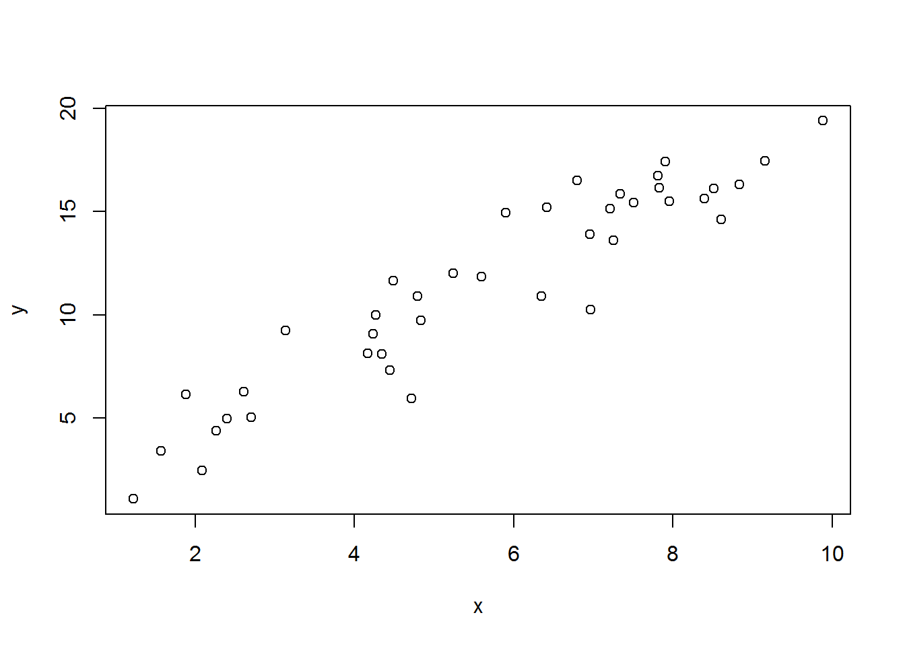
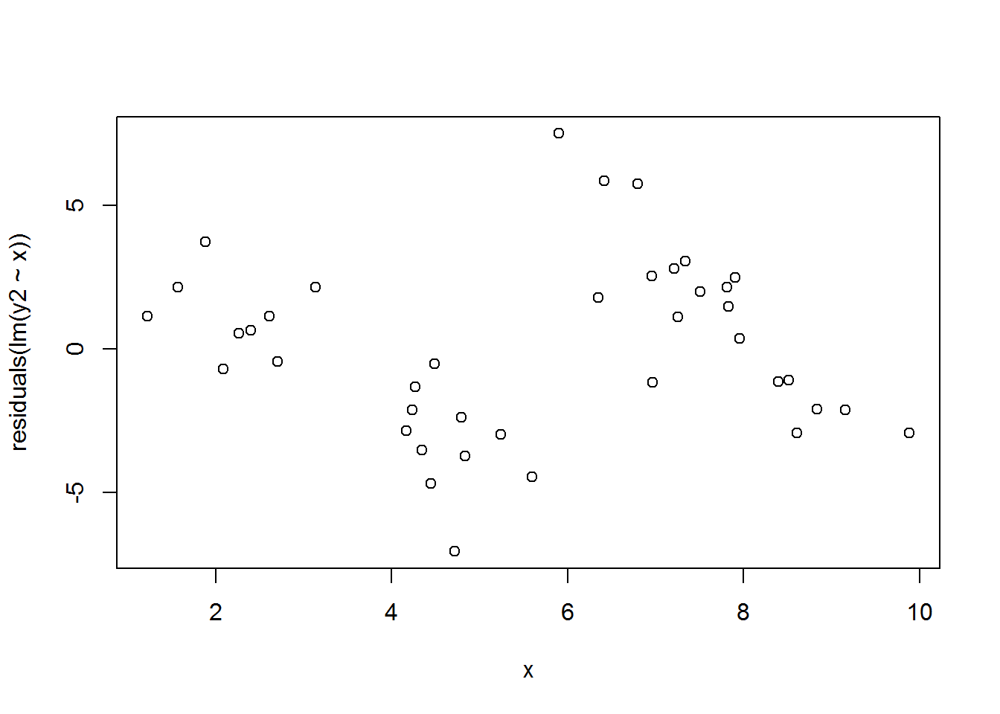
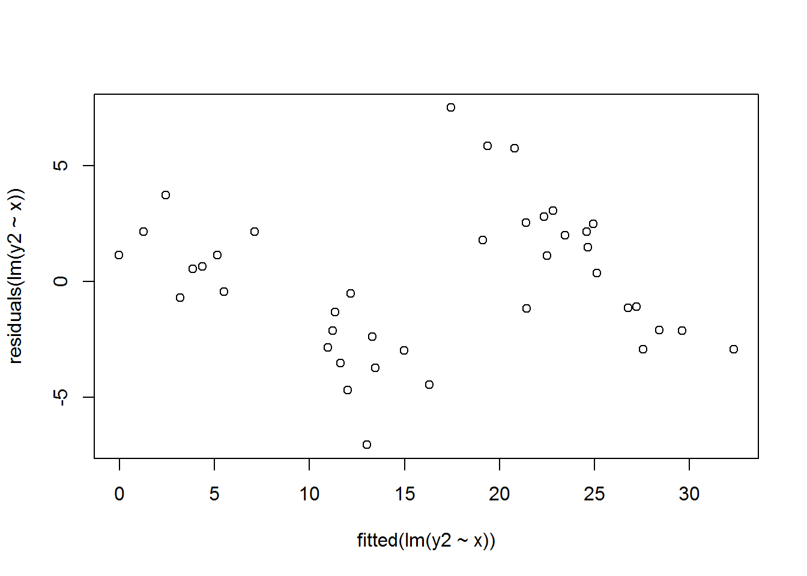
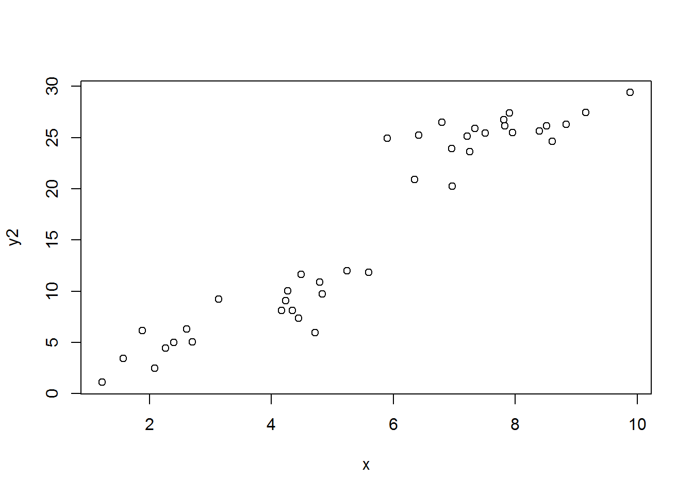
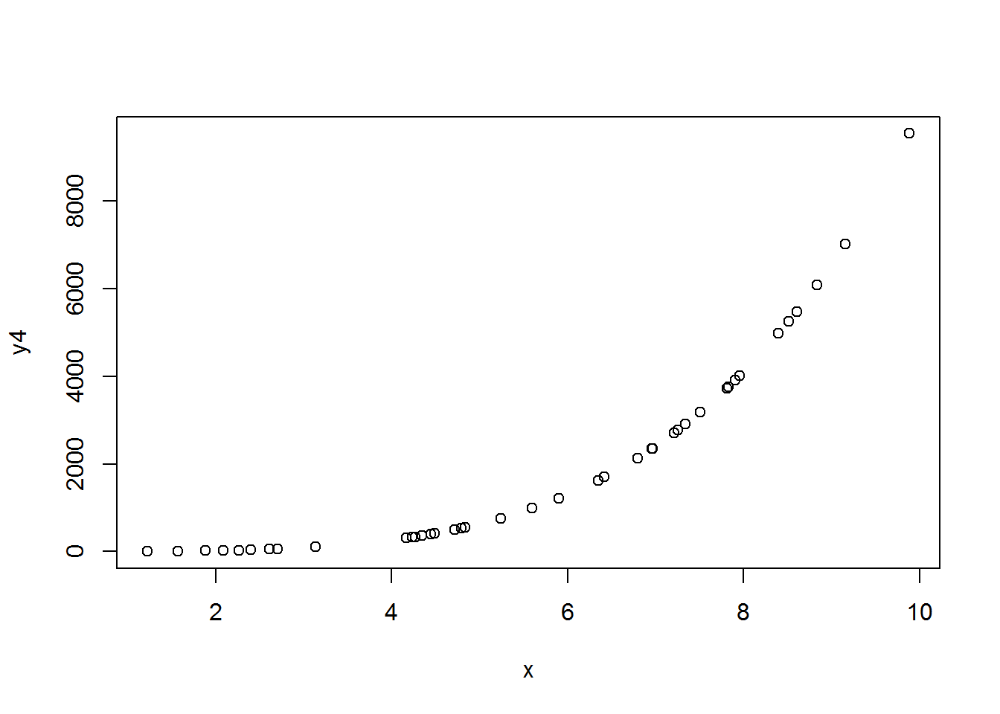
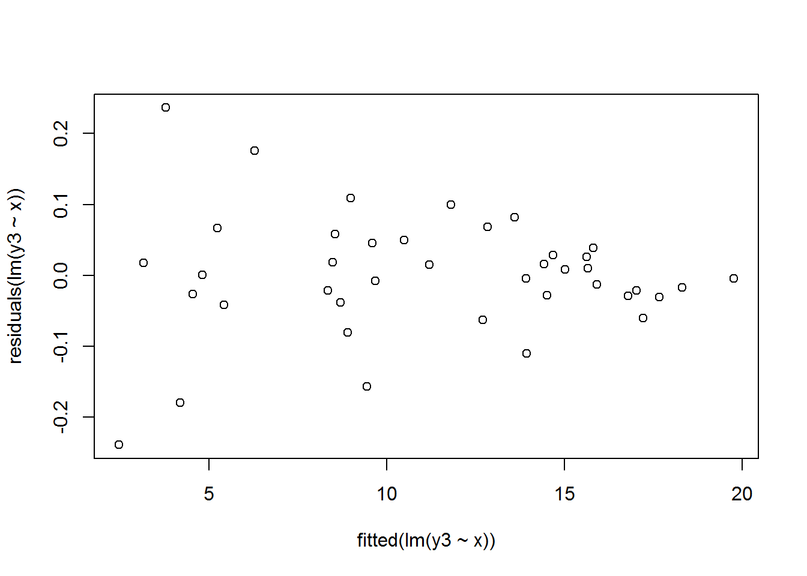
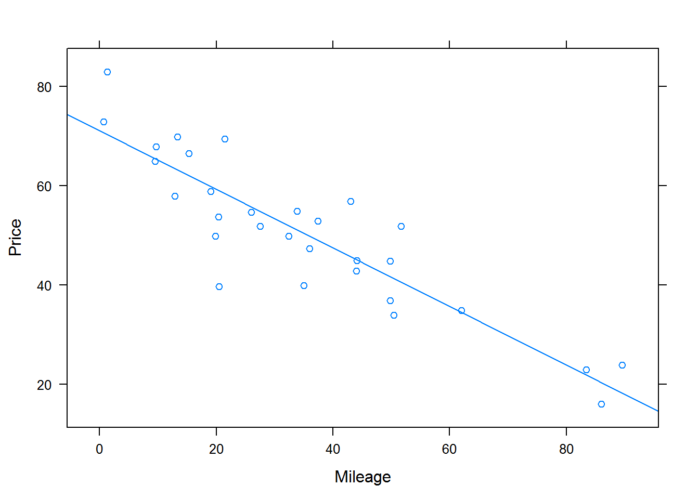

6.4 Regression Diagnosics
6.4.1 Objective
Generate diagnostic plots to check for
i. Normality
ii. Equal variance
iii. Outliers
iv. Quality of fit
6.4.2 Review
The linear regression model assumes that the errors are
1. Independent
2. Normally distributed
3. Constant variance (homoskedastic)
In this section we will test these assumptions.
We are also assuming that a linear fit is appropriate, so we need to check this assumption.
Finally we need to check for observations that may have a large influence on the model. These are sometimes called outliers.
6.4.3 Assumptions about the Errors
To understand the assumptions, let’s simulate data and then explore tools to evaluate the assumptions.
We will first build a data set where \[y=2x+\epsilon\] where \[\epsilon \sim N(0,1.5)\]
set.seed(1282015)
(x<-sort(runif(40,min=1,max=10)))## [1] 1.222363 1.570792 1.880924 2.085131 2.265512 2.396055 2.608625
## [8] 2.700767 3.133305 4.169626 4.230697 4.266002 4.347764 4.449684
## [15] 4.487690 4.715550 4.789777 4.838021 5.241457 5.596986 5.899153
## [22] 6.347361 6.418660 6.794570 6.957827 6.963492 7.215243 7.252023
## [29] 7.340929 7.506853 7.809755 7.833709 7.903431 7.960009 8.400092
## [36] 8.515763 8.603725 8.833631 9.156319 9.884379set.seed(2)
(error<-rnorm(40,0,1.5))## [1] -1.345371820 0.277273777 2.381767997 -1.695563511 -0.120377635
## [6] 0.198630427 1.061932094 -0.359547036 2.976710905 -0.208180518
## [11] 0.626476126 1.472629166 -0.589043033 -1.559503465 2.673343440
## [16] -3.466603627 1.317906871 0.053710077 1.519243038 0.648397732
## [21] 3.136228808 -1.799888729 2.384457300 2.931977463 0.007406665
## [26] -3.677559582 0.715855954 -0.894837253 1.188304905 0.434455065
## [31] 1.108407906 0.478440602 1.614246531 -0.426236581 -1.165012911
## [36] -0.893490748 -2.588969669 -1.353876720 -0.838592872 -0.369768851(y<-2*x+error)## [1] 1.099355 3.418857 6.143617 2.474698 4.410647 4.990741 6.279181
## [8] 5.041987 9.243322 8.131071 9.087871 10.004633 8.106485 7.339865
## [15] 11.648724 5.964497 10.897461 9.729752 12.002157 11.842370 14.934534
## [22] 10.894832 15.221777 16.521117 13.923061 10.249425 15.146341 13.609209
## [29] 15.870163 15.448161 16.727917 16.145858 17.421108 15.493781 15.635171
## [36] 16.138036 14.618481 16.313386 17.474046 19.398989plot(x,y)
Independence is difficult to evaluate and can typically only be done if the data is collected in an experiment and there is a time element. For example, if our data were collected so that the first value was 1.2223634 and the last value collected at a latter time was 9.8843788. Then we could check for independence by plotting the x-values, ordered by time, against the residuals. Again, in an observational study this is not possible but in an experiment it is. For our understanding, we will treat the simulated data as an experiment and check for independence.
First we build the model.
modles40<-lm(y~x)
summary(modles40)##
## Call:
## lm(formula = y ~ x)
##
## Residuals:
## Min 1Q Median 3Q Max
## -3.7060 -0.8679 -0.1237 1.1873 3.0193
##
## Coefficients:
## Estimate Std. Error t value Pr(>|t|)
## (Intercept) 0.7274 0.6792 1.071 0.291
## x 1.8965 0.1115 17.015 <2e-16 ***
## ---
## Signif. codes: 0 '***' 0.001 '**' 0.01 '*' 0.05 '.' 0.1 ' ' 1
##
## Residual standard error: 1.67 on 38 degrees of freedom
## Multiple R-squared: 0.884, Adjusted R-squared: 0.8809
## F-statistic: 289.5 on 1 and 38 DF, p-value: < 2.2e-16Then plot the x-values versus the residuals.
plot(residuals(modles40)~x)
If independence is not a valid assumption, then we would see a pattern in the plot. We do not see any pattern here. Some examples of patterns are a learning curve, where variance decreases or the slope changes, environmental effects such as heat or humidity which change during the day, or some change in the variable such as a different testing machine.
A similar plot which is more common, is to plot the fitted values against the residuals.
plot(residuals(modles40)~fitted(modles40))
To help us understand a lack of independence, let’s put a shift in the data after 20 data points have been observed.
y2<-y
y2[21:40]<-y2[21:40]+10
plot(x,y2)
summary(lm(y2~x))##
## Call:
## lm(formula = y2 ~ x)
##
## Residuals:
## Min 1Q Median 3Q Max
## -7.0509 -2.2012 -0.0452 2.1429 7.4960
##
## Coefficients:
## Estimate Std. Error t value Pr(>|t|)
## (Intercept) -4.606 1.274 -3.616 0.000865 ***
## x 3.737 0.209 17.878 < 2e-16 ***
## ---
## Signif. codes: 0 '***' 0.001 '**' 0.01 '*' 0.05 '.' 0.1 ' ' 1
##
## Residual standard error: 3.131 on 38 degrees of freedom
## Multiple R-squared: 0.8937, Adjusted R-squared: 0.8909
## F-statistic: 319.6 on 1 and 38 DF, p-value: < 2.2e-16plot(residuals(lm(y2~x))~x)
plot(residuals(lm(y2~x))~fitted(lm(y2~x)))
From the plot, it should be clear that the residuals are not in a random pattern, there is a dependency. You could in this simulation, introduce other types of dependencies.
The plot of residuals turns out to be one of the best diagnostic tools. We can also use it to check for constant variance as well as the quality of the linear fit.
Next, going back to our original data, let’s let the variance decrease as the x-values increase.
(error2<-error/(5*x))## [1] -0.2201263333 0.0353037015 0.2532550356 -0.1626337812 -0.0106269674
## [6] 0.0165797866 0.0814170088 -0.0266255519 0.1900045228 -0.0099855730
## [11] 0.0296157372 0.0690402525 -0.0270963667 -0.0700950166 0.1191411784
## [16] -0.1470285982 0.0550299904 0.0022203326 0.0579702568 0.0231695320
## [21] 0.1063281089 -0.0567129823 0.0742976661 0.0863035495 0.0002129017
## [26] -0.1056240005 0.0198428798 -0.0246782792 0.0323747832 0.0115748922
## [31] 0.0283852169 0.0122149195 0.0408492614 -0.0107094497 -0.0277380991
## [36] -0.0209843961 -0.0601825269 -0.0306527790 -0.0183172482 -0.0074818835(y3<-2*x+error2)## [1] 2.224600 3.176887 4.015104 4.007628 4.520398 4.808690 5.298666
## [8] 5.374908 6.456615 8.329266 8.491011 8.601044 8.668432 8.829274
## [15] 9.094521 9.284072 9.634584 9.678262 10.540884 11.217142 11.904634
## [22] 12.638008 12.911618 13.675443 13.915867 13.821361 14.450328 14.479368
## [29] 14.714233 15.025281 15.647895 15.679632 15.847711 15.909309 16.772446
## [36] 17.010542 17.147268 17.636610 18.294321 19.761276plot(x,y3)
plot(residuals(lm(y3~x))~fitted(lm(y3~x)))
Notice how the spread of the residuals decreases as the fitted values get larger, this is an indication that variance is not constant.
Now let’s change the underlying model to not be linear and look at the residual plot.
(y4<-x^4+error)## [1] 0.8871787 6.3652676 14.8983413 17.2075435 26.2226581
## [6] 33.1586409 47.3689056 52.8449523 99.3620238 302.0571672
## [11] 320.9935650 332.6678704 356.7363122 390.4682270 408.2672661
## [16] 490.9914613 527.6515427 547.9154007 756.2779063 981.9824799
## [21] 1214.1764942 1621.4024905 1699.7582633 2134.2480641 2343.6669097
## [26] 2347.6243944 2710.9308302 2765.0066720 2905.2381582 3176.0770614
## [31] 3721.1652431 3766.3860278 3903.3926221 4014.2842430 4977.7665239
## [36] 5257.9993379 5476.9769666 6087.8014211 7028.0025738 9545.1046992plot(x,y4)
plot(residuals(lm(y4~x))~fitted(lm(y4~x)))
The plot indicates that there is a non-linear relationship between x and y.
Normality can be checked using a qq-plot.
xqqmath(residuals(modles40))## Warning in qqmath.numeric(x, data = data, panel = panel, ...): explicit
## 'data' specification ignored
We have discussed this plot in detail in a previous lesson.
Often instead of using the residuals to check assumptions, standardized residuals are used. This is done to remove the bias that an interpreter of the plot may have just based on the size of the residuals. The easiest standardization is to divide the residuals by the estimate of standard error. The second method is called the studentized residual which accounts for the fact that the variance of the residual depends on the hat matrix. This second standardization is the most common.
6.4.4 Outliers, Leverage, and Influence
An outlier can be an observed value that is much different than the predicted value or a value of the predictor that is much different than the other predictor values. The second type is called a leverage point. The first simply an outlier. Outliers should be investigated to make sure there was not a data recording error or measurement error. Be careful about simply deleting them. There must be a reason to remove it other than it is an outlier.
Outliers in the response are again found from the residual plot.
Leverage can be measured by looking at the impact an observation has on the slope. This is done by calculating the slope without the observation and then with the observation and looking at the difference in slopes. This is called DFBETA, difference in the beta. We can also standardize it so that we can easily compare across data sets.
library(car)dfbetaPlots(modles40,ylim=c(.15,-.15),xlab = "Observation Number",ylab = "DFBeta")Figure 6.1: Impact of Each Observation on the Slope Using DFBETA
Figure 6.1 illustrates how each observation impacts the slope. The dotted lines above and below the origin are one standard deviation. None of the values seem extreme. We could also standardize the output by using DFBETAS.
dfbetasPlots(modles40,ylim=c(1.1,-1.1),xlab = "Observation Number",ylab = "DFBetas")Figure 6.2: Impact of Each Observation on the Slope Using DFBETAs
Figure 6.2 is standardized and the dotted line is at positive and negative 1. Again, there are no points with high leverage.
Another measure of leverage is to take the value from the hat matrix and compare it with \(2p/n\) where \(p\) is the number of parameters. This is simply called leverage.
Influence is determined by how much the fitted values depend on an observation. We could calculate the difference between the fitted values with the observation in the model and without removed. This is called DFFIT. It can also be standardized.
The second measure of influence is called Cook’s Distance. It measures the difference in all the observed and predicted values with the observation removed. It is a vector distance squared. It also gets standardized by the variance and number of parameters. A value in excess of 1 is a concern.
Luckily, R has plots and functions for all of these measures.
par(mfrow=c(2,3))
plot(modles40,w=1:6)
par(mfrow=c(1,1))6.4.5 Example
In the library Stat2Data, there is a data set that has the price of a Porsche and its mileage. We will build a linear model and test the assumptions.
library(Stat2Data)
library(fastR)
library(DT)data(PorschePrice)
head(PorschePrice)## Price Age Mileage
## 1 69.4 3 21.5
## 2 56.9 3 43.0
## 3 49.9 2 19.9
## 4 47.4 4 36.0
## 5 42.9 4 44.0
## 6 36.9 6 49.8Instead of using head we can use a datatable which creates an html widget to examine the data.
DT::datatable(PorschePrice)xyplot(Price~Mileage,data=PorschePrice,type=c("p","r"))
summary(lm(Price~Mileage,data=PorschePrice))##
## Call:
## lm(formula = Price ~ Mileage, data = PorschePrice)
##
## Residuals:
## Min 1Q Median 3Q Max
## -19.3077 -4.0470 -0.3945 3.8374 12.6758
##
## Coefficients:
## Estimate Std. Error t value Pr(>|t|)
## (Intercept) 71.09045 2.36986 30.0 < 2e-16 ***
## Mileage -0.58940 0.05665 -10.4 3.98e-11 ***
## ---
## Signif. codes: 0 '***' 0.001 '**' 0.01 '*' 0.05 '.' 0.1 ' ' 1
##
## Residual standard error: 7.17 on 28 degrees of freedom
## Multiple R-squared: 0.7945, Adjusted R-squared: 0.7872
## F-statistic: 108.3 on 1 and 28 DF, p-value: 3.982e-11Checking the assumptions.
par(mfrow=c(2,3))
plot(lm(Price~Mileage,data=PorschePrice),w=1:6)
par(mfrow=c(1,1))plot(cooks.distance(lm(Price~Mileage,data=PorschePrice)))
What are your conclusions from these plots?